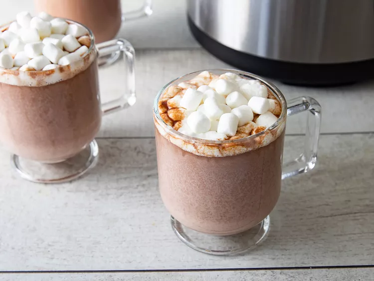

Hot Chocolate

Description
This decadent crockpot hot chocolate is easy to make with milk, condensed milk, cream, chocolate chips, and vanilla in the slow cooker.
Ingredients:
- Milk
- Chocolate chips
- Heavy whipping cream
- Sweetened condensed milk
- Vanilla
Directions:
- Combine milk, chocolate chips, cream, condensed milk, and vanilla in a slow cooker.
- Cover and cook on Low, stirring occasionally, until chocolate chips are melted and mixture is smooth, about 2 hours.